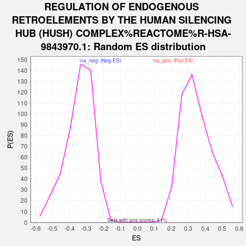

| | | Dataset | GFPPositive_GFPNegative |
| Phenotype | NoPhenotypeAvailable |
| Upregulated in class | na_pos |
| GeneSet | REGULATION OF ENDOGENOUS RETROELEMENTS BY THE HUMAN SILENCING HUB (HUSH) COMPLEX%REACTOME%R-HSA-9843970.1 |
| Enrichment Score (ES) | 0.68259054 |
| Normalized Enrichment Score (NES) | 1.9608282 |
| Nominal p-value | 0.0 |
| FDR q-value | 0.03604406 |
| FWER p-Value | 0.306 |
Table: GSEA Results Summary
_COMPLEX_REACTOME_R-H.1_21.png) Fig 1: Enrichment plot: REGULATION OF ENDOGENOUS RETROELEMENTS BY THE HUMAN SILENCING HUB (HUSH) COMPLEX%REACTOME%R-HSA-9843970.1
Fig 1: Enrichment plot: REGULATION OF ENDOGENOUS RETROELEMENTS BY THE HUMAN SILENCING HUB (HUSH) COMPLEX%REACTOME%R-HSA-9843970.1
Profile of the Running ES Score & Positions of GeneSet Members on the Rank Ordered List

Fig 2: REGULATION OF ENDOGENOUS RETROELEMENTS BY THE HUMAN SILENCING HUB (HUSH) COMPLEX%REACTOME%R-HSA-9843970.1: Random ES distribution
Gene set null distribution of ES for REGULATION OF ENDOGENOUS RETROELEMENTS BY THE HUMAN SILENCING HUB (HUSH) COMPLEX%REACTOME%R-HSA-9843970.1